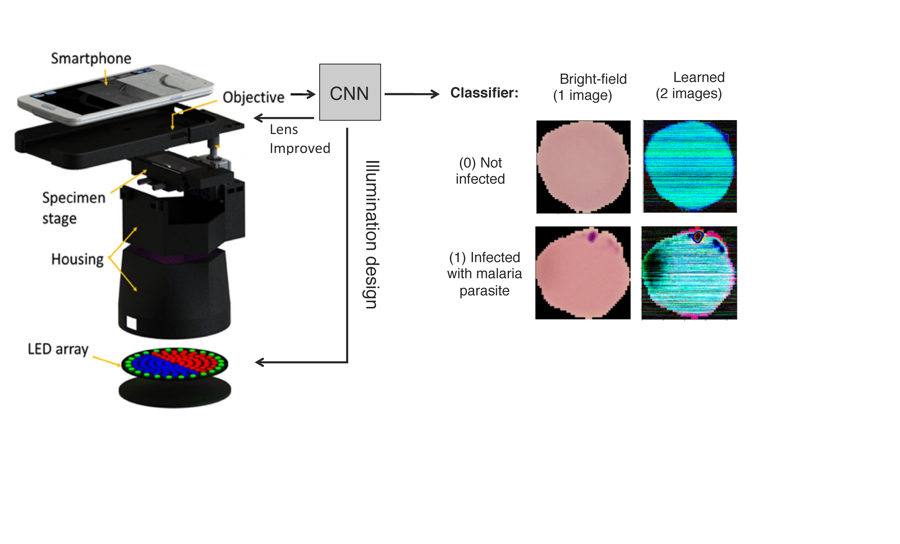

| Paper PDF |

|
Mobile health with machine learning provide a good opportunity to help in the diagnosis of health conditions using microscopy without the need of an expert in remote placess. In this paper, I will explore a model that finds the optimal hardware settings for an mhealth microscope that will help in the diagnostic of the malaria. The theoretical analysis was done considering that mhealth devices must be build using affordable hardware.
|
|
|
| Paper: |
Code and Data:
|